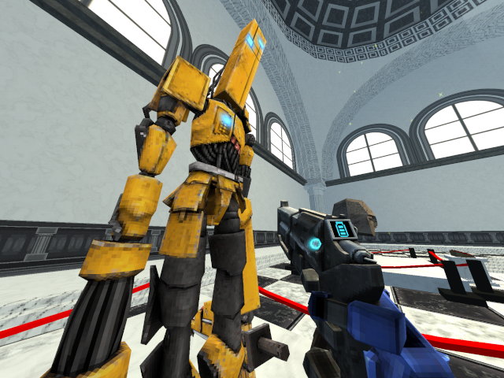

The following sections describe my process for creating the 3D assets (the bike, the body of this terminal, etc.) used in the hideout. The process wasn't identical for every 3D asset, but it generally went as follows:
I knew going into this project the 3D assets would have to be basic due to my own artistic abilities, time, and the need to serve the project on demand over the internet.
With those constraints in mind, I tried to replicate the video game ULTRAKILL's visuals. It uses several techniques of PlayStation 1-era games, namely: low poly models, low resolution textures, and linear texture filtering, but it doesn't share the low display resolution of games of that era:

You can find more information on my implementation of those techniques in the Modeling, UV Unwrapping and Texturing sections.
I like the style, and I felt I was capable of creating something similar in a reasonable amount of time. Plus, its smaller textures and 3D models made them a good fit for serving on demand.
I didn't nail the look on a technical level, and my artistic abilities don't compete with the artists that worked on ULTRAKILL, but I think it gives a similar vibe.